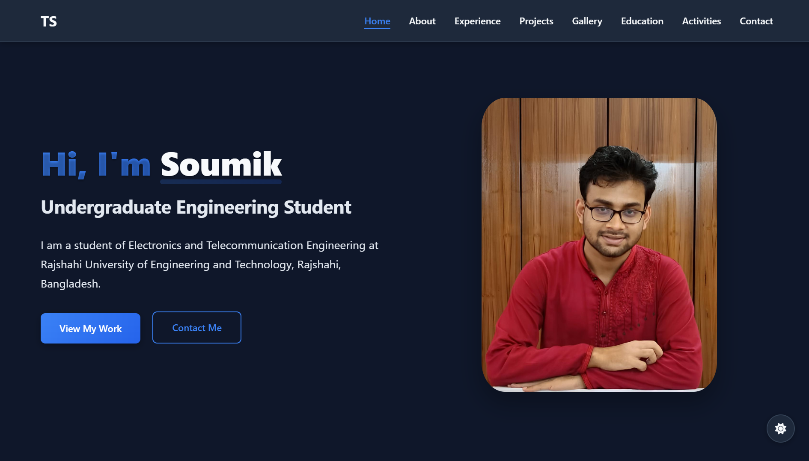

Gesture Controlled Wheelchair
An innovative robotics project that enables wheelchair control through hand gestures. The system uses ESP32 and Arduino IDE to interpret user gestures, making mobility more accessible and intuitive for users with limited physical capabilities.
C++
ESP32
Arduino IDE
Robotics

Personal Portfolio Website
A modern, responsive portfolio website built with HTML, CSS, and JavaScript. Features a clean design, smooth animations, and optimal user experience across all devices. Showcases my projects, skills, and professional journey.
HTML5
CSS3
JavaScript
Responsive Design